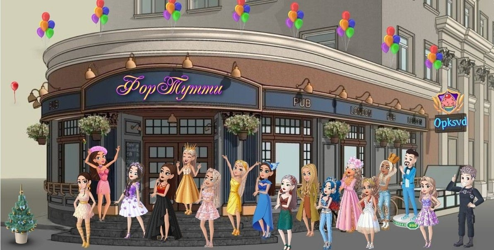
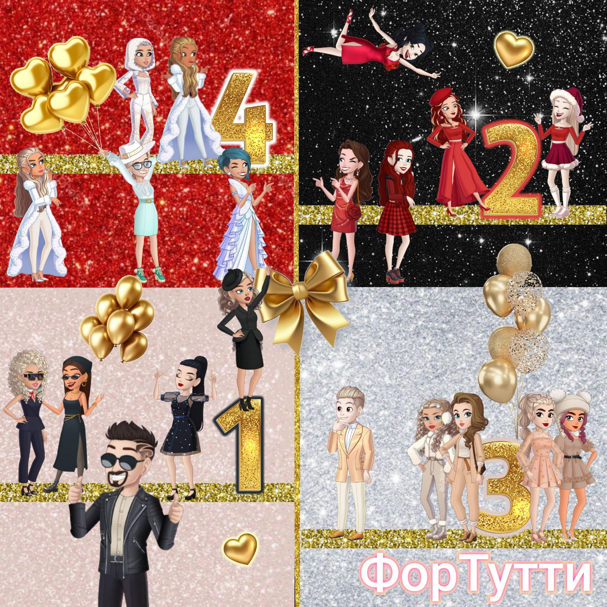

ГИЛЬДИЯ «ФОРТУТТИ»

Гильдия ФорТутти ищет активных, общительных и ответственных ребят и девчат!
Эй, кулинары-виртуозы и покорители ресторанных горизонтов! Готовы ворваться в мир Cooking Diary не просто так, а с оркестром? Гильдия ФорТутти распахивает свои двери для самых амбициозных, креативных и просто обожающих готовить игроков!
Мечтаете о команде единомышленников, способных поддержать в трудную минуту и разделить радость побед? Тогда бросайте свои сковородки и бегите скорее в гильдию ФорТутти!
О НАШЕЙ ГИЛЬДИИ
Что вас ждет в ФорТутти? Море позитива, океан общения и, конечно же, горы вкуснейших блюд! Мы регулярно устраиваем флешмобы, захватывающие игры и безумные конкурсы (угадайки) и др., чтобы ваша игра стала еще ярче и интереснее.
Но самое главное – это, конечно же, наша дружная команда! Мы поддерживаем друг друга, делимся секретами мастерства и просто весело проводим время вместе. Мы – не просто гильдия, мы – семья, где каждый найдет свое место! Мы верим, что вместе мы – сила, способная перевернуть мир Cooking Diary!
Годы летят быстрее, чем жарятся пирожки, а ФорТутти процветает, становится всё краше и аппетитнее!. Гильдия стала не просто сообществом игроков, а настоящим домом для многих. Вечерние посиделки в чате, обсуждение новых уровней и рецептов, взаимопомощь в прохождении сложных заданий - все это сблизило людей, живущих в самых разных уголках нашей необъятной страны!
И пусть cooking diary - всего лишь игра, но для многих членов ФорТутти это нечто большее - это место, где всегда найдётся ложка поддержки, горсть дружбы и целая тарелка отличного настроения!
Так чего же вы ждете? Хватайте свои поварские колпаки и присоединяйтесь к нам! Вместе мы превратим Cooking Diary в настоящий кулинарный рай! Не упустите свой шанс стать частью нашей команды! Вступайте в ФорТутти – и пусть ваши блюда будут самыми вкусными, а победы – самыми сладкими!
Готовы к приключениям? Тогда добро пожаловать в нашу самую лучшую и "безумную" семейку!
ПРАВИЛА НАШЕЙ ГИЛЬДИИ
Только активные игроки! Зашел — сразу пиши в чат, любим общительных. Минимум 60 ур./день. Выполнение всех событий с очками G — обязательно! В КТ стремиться занять 1 место, 2-е и 3-е места тоже приветствуются! Доставка по желанию, но если начал, то минимум от 20. Об отсутсвии в игре по каким-либо причинам в дни заданий — предупреждать заранее.
ГИМН ГИЛЬДИИ ФОРТУТТИ

Заметка из дневника Demona
Однажды в студеную зимнюю пору,
Закинуло в гильдию как-то судьбою,
Знакомых в ней не было, я — новичок,
И был словно волк я тогда одинок…
Смущался сначала, как будто чужой,
Но вскоре почувствовал мир и покой.
И лед одиночества сразу растаял,
Наполнилась жизнь ярким светом награды.
Не ведал про рейды, про КТ бои,
Но постепенно меня обучили,
Познал все секреты, как надо играть.
И путь свой решил я тогда продолжать.
Флешмобы и игры – все ново для глаз,
Начать было сложно — я не одет,
В этих забавах участвовать - желания нет,
Но вот постепенно стал шмот появляться.
Оделся, прошарил, теперь я в строю,
И сложностей больше я не познаю.
Трындел я там что-то, народ собирал,
Как действовать верно, слегка помогал.
Мы вместе творили, учились, мечтали,
Познали и радость, и горечь утраты.
И гильдия стала семьей настоящей,
Где каждый готов поддержать, если надо.
Знакомиться начал, почаще играть,
Порою не знал что уже и сказать,
Так постепенно со всеми общался,
Ничем тогда я не выделялся…
Общение, игры, все чаще, смелей,
Нашел я друзей среди этих людей.
Так с каждым сближался, себя проявлял,
Особым талантом я не блистал.
В турнирах ФорТутти кипят наши страсти,
Победа зовет, словно солнечный зайчик.
Пусть сложно бывает, пусть нервы шалят,
Но вера в победу – наш двигатель, вот так!
Людей было много, огромная Ги,
Но время сносило наши ряды,
Ведь *нехороших* тоже хватало,
Порядка и чести в них было мало…
Остались лишь добрые люди внутри,
О них и продолжу рассказ свой вести,
Прекрасный состав, что собрался у нас,
Его перечислю специально для Вас…
Наталёк – Админ наш, всегда на посту,
Поможет, подскажет, развеет тоску.
Про Ги всё расскажет, в курс дела введет,
В проблеме любой тебя верно поймет.
Помимо Админа, есть старички,
Гордость, опора и честь нашей Ги,
Попробую также и их перечесть.
Ведь этот составчик сложился годами,
Ребята друг другу во всём помогали…
Вика, Demon, Нась, Ольчик, Оксана,
Маринчик, Верон, Лёля, Николавна,
Агния, Эльза, Рыжик, Анюта,
Sia, ОЛО, Ленчик, Диманя и Zlata,
Вот и вся гильдия - славная наша…
И пусть за окном холода и снега,
В гильдии тепло, и царит там игра.
Поддержат, помогут, научат всегда,
ФорТутти – семья, что мне дорога!
Так гильдия стала мне домом вторым,
Где знанья черпал и рос я большим,
И в зимнюю стужу, средь шумных бесед,
Нашел я друзей и оставил свой след.